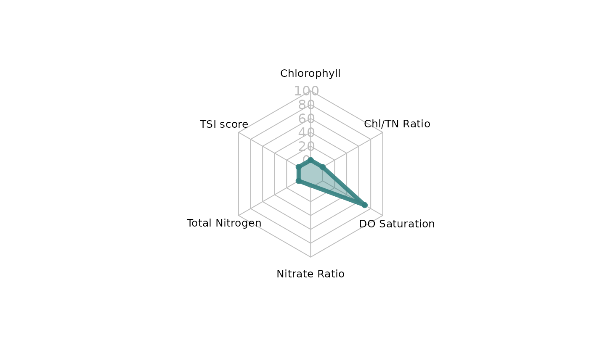

Radar plots for tidal creek indicators
Arguments
- id
numeric indicating the
idnumber of the tidal creek to plot- cntdat
output from
anlz_tdlcrkindic- col
color input for polygon and line portions
- ptsz
numeric size of points
- lbsz
numeric for size of text labels
- valsz
numeric for size of numeric value labels
- brdwd
numeric for polygon border width
Details
See details in anlz_tdlcrkindic for an explanation of the indicators
Internal code borrowed heavily from the radarchart function in the fmsb package.
Examples
cntdat <- anlz_tdlcrkindic(tidalcreeks, iwrraw, yr = 2023, radar = TRUE)
set.seed(123)
id <- sample(unique(cntdat$id), 1)
show_tdlcrkradar(id, cntdat)
